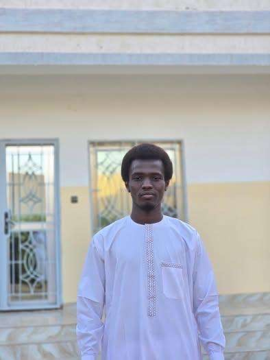

kotty mahamat
Étudiant en l1 informatique
Je suis étudiant en informatique passionné par le développement web, la programmation et la création de solutions digitales modernes.
Voir mes projetsCe site web représente mon espace personnel en ligne. Il me permet de présenter mon parcours académique, mes compétences techniques, mes projets réalisés ainsi que mes ambitions professionnelles.
Depuis mon entrée dans le domaine de l’informatique, j’ai développé un fort intérêt pour les technologies web notamment HTML, CSS et Python. J’aime comprendre comment fonctionnent les sites web et créer mes propres interfaces.
Mon objectif est de devenir un développeur web professionnel capable de concevoir des applications modernes, efficaces et adaptées aux besoins des utilisateurs.
Je suis une personne motivée, disciplinée et toujours prête à apprendre. J’aime relever des défis et résoudre des problèmes techniques.
Je travaille aussi bien seul qu’en équipe et je suis capable de m’adapter rapidement à de nouveaux environnements.